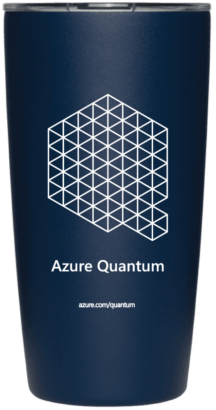
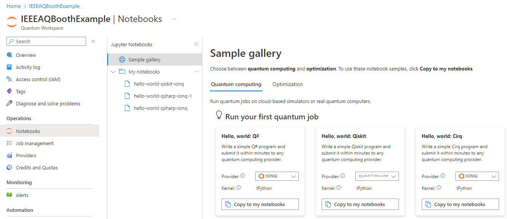
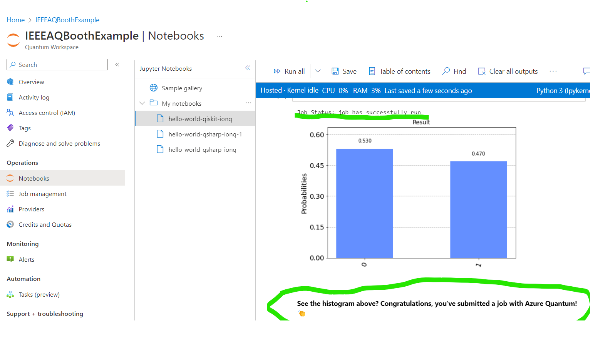
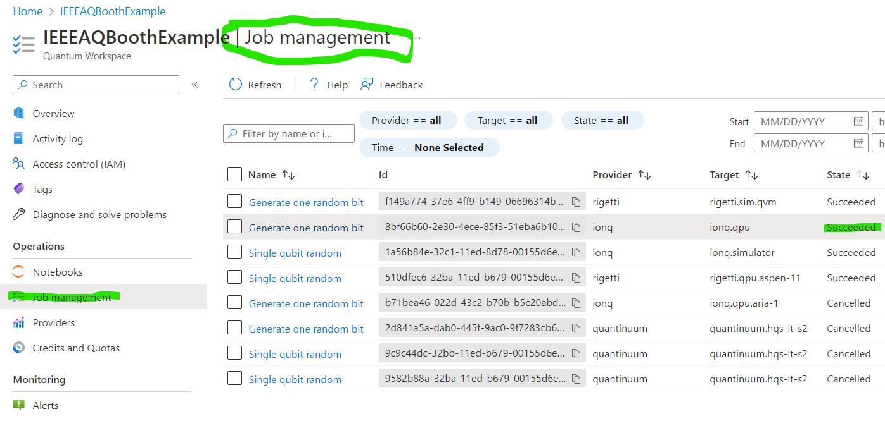

Microsoft Booth Challenge
Microsoft Booth Challenge
Learn something new, get something cool!
September 19-22, 2022 · IEEE Quantum Week (QCE22)
Welcome to IEEE Quantum Week 2022! We hope this week is full of excitement and learning for you.
The Azure Quantum team invites you to learn more about Azure Quantum and get a Miir beverage tumbler!
It's easy, just follow these steps:
-
Use your own Azure account.
Don’t have one? You can create a free Azure account (if you're a student, check out free Azure accounts for students). - Create your Azure Subscription and Quantum Workspace.
-
Run a job using an Azure Quantum Notebook.
We recommend selecting the Hello World sample in your preferred language (Q#, Qiskit, or Cirq) so you can easily follow the documentation, but feel free to choose any of the available samples or write your own!  -
Congratulations! You have run your first job on Azure Quantum!
Bring proof of your completed job to the Azure Quantum booth during expo hours to get your beverage tumbler! Proof can either be a screenshot of the notebook cell showing the job results or a screenshot of a "Succeeded" job in the Job Management tab (examples below).  